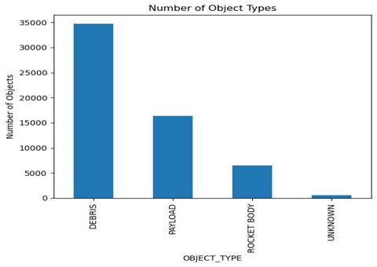
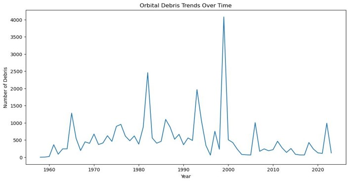
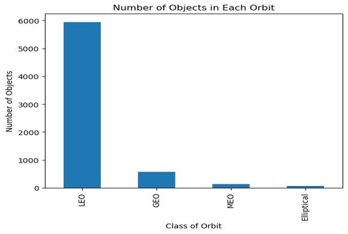
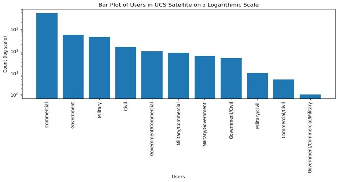
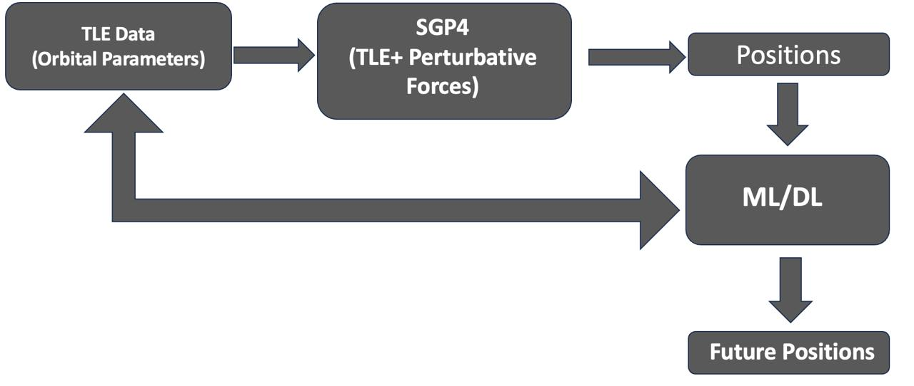
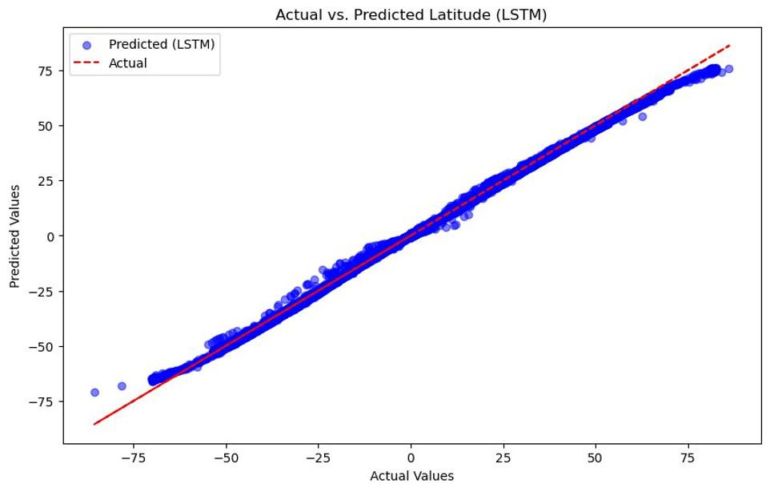
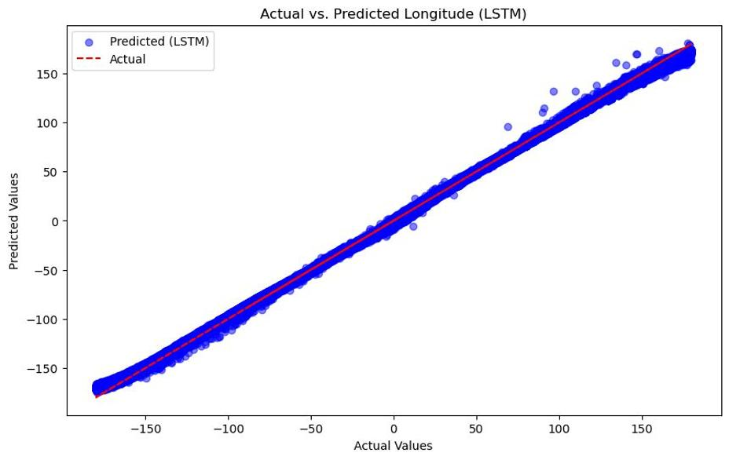
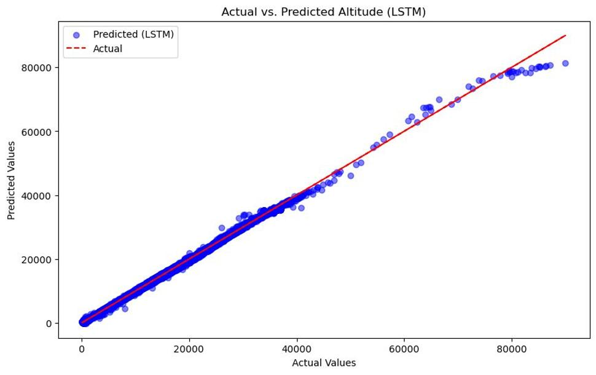

Welcome to Space Debris Detection & Tracking
Madan Sai Daram, Venkata Anand Vikram Bharadwaj Kallakuri
Predicting the Position of Space debris with some Deep Learning and Machine Learning Model.
Project Overview
The major purpose of our "Space Debris Detection & Tracking" project is to create and deploy new approaches for accurately detecting, tracking, and analyzing space debris. As humanity's presence in space expands, the collection of debris in Earth's orbit poses increasing threats. Our research aims to reduce these dangers by improving the technological capabilities used to monitor and manage debris, hence improving the safety of satellites, space stations, and space missions. This program is critical for maintaining the operational integrity of present and future space infrastructure and the long-term sustainability of space activities.
Relevance
The "Space Debris Detection & Tracking" project is crucial as space traffic grows due to increased satellite launches by both government and commercial entities. The increasing quantity of space debris, which ranges from defunct satellites to rocket components, poses serious threats to active satellites and human spaceflight. Such debris can result in disastrous collisions at high speeds. Additionally, the threat of Kessler Syndrome, in which collisions in low Earth orbit can cause a chain reaction of additional collisions, shows the importance of our mission. By improving debris identification and tracking systems, our initiative contributes significantly to the safety of space missions and the long-term sustainability of space operations around the world.
Objectives
Integrating diverse datasets to track and analyze space debris. Developing machine learning models to predict debris movement. Evaluating the effectiveness of these models against traditional methods.
Datasets
Space-Track Data
Space-Track.org is an official source of space data managed by the U.S. Space Force. It offers detailed tracking information on man-made satellites and other space debris. Access to its detailed catalog requires a verified account, which can be obtained by registering on the Space-Track.org website.
| Column Name | Column Type | Description |
|---|---|---|
| International Designator | Object | Unique launch-related space object ID |
| NORAD CAT ID | Integer | Unique satellite tracking number |
| OBJECT_TYPE | Object | Classification of space object |
| Satellite Name | Object | Commonly recognized satellite title |
| Country | Object | Nation of satellite owner/operator |
| Launch | Object | Official date of satellite's launch |
| International Designator | NORAD_CAT_ID | OBJECT_TYPE | Satellite Name | Country | Launch |
|---|---|---|---|---|---|
| 1957-001A | 1 | ROCKET BODY | SL-1 R/B | CIS | 10/4/57 |
| 1957-001B | 2 | PAYLOAD | SPUTNIK 1 | CIS | 10/4/57 |
| 1957-002A | 3 | PAYLOAD | SPUTNIK 2 | CIS | 11/3/57 |
| 1958-001A | 4 | PAYLOAD | EXPLORER 1 | US | 10/4/57 |
| 1958-002A | 16 | ROCKET BODY | VANGUARD | US | 3/17/58 |
| 1958-002B | 5 | PAYLOAD | VANGUARD 1 | US | 3/17/58 |
Types of Objects
Debris trends over time
UCS Satellite Data
The UCS Satellite Database, provided by the Union of Concerned Scientists, compiles a wide range of data on operational satellites around the Earth, intended for researchers, policymakers, and the public. This database does not require user registration and can be accessed on the UCS website.
| Column Name | Column Type | Description |
|---|---|---|
| NORAD Number | Integer | NORAD catalog identifier for the object |
| Name of Satellite | Object | The official name of the satellite |
| Country of Operator | Object | Nation controlling the satellite |
| Users | Object | End-users or beneficiaries of the satellite |
| Class of Orbit | Object | The orbital classification of the satellite |
| NORAD Number | Name of Satellite | Country of Operator | Users | Class of Orbit |
|---|---|---|---|---|
| 44859 | IHOPSAT-TD | USA | Commercial | LEO |
| 42775 | Aalto-1 | Finland | Civil | LEO |
| 41460 | AAt-4 | Denmark | Civil | LEO |
| 39508 | ABS-2 | Multinational | Commercial | GEO |
| 41588 | ABS-2A | Multinational | Commercial | GEO |
Class-wise count of objects
Types of End Users
Two-line element Data
Two-Line Element (TLE) data provides essential information about the orbits of Earth-orbiting objects, such as satellites and space debris. The TLE format comprises a standardized string of numbers that represent orbital elements, including the object's inclination, right ascension of ascending node, eccentricity, argument of perigee, mean anomaly, mean motion, and the revolution number at epoch. The Space-Track website is a commonly used platform for accessing TLE data. It provides orbital data, historical element sets, and other satellite-related information. Users are required to create an account to access the data. CelesTrak is another resource that offers TLE data and further documentation on the TLE format. Both platforms are pivotal for researchers, satellite operators, and enthusiasts who need accurate orbital data for tracking and analysis.
You can find detailed TLE information and the necessary resources on CelesTrak and access the TLE data by creating an account on Space-Track.
1 25544U 98067A 21275.48841729 .00001919 00000-0 43903-4 0 9993
| Line | Component | Description |
|---|---|---|
| 1 | Line Number | Always the number 1 |
| 1 | Satellite Catalog Number (NORAD) | Five-digit satellite number assigned by NORAD |
| 1 | Classification (U, C, S) | Security classification (U for unclassified, C for classified, S for secret) |
| 1 | International Designator | Year of launch (last two digits), launch number of that year, piece of the launch |
| 1 | Epoch (Year and Day) | Year and Julian Day of the epoch (time of the TLE data) followed by the fractional portion of the day |
| 1 | First Time Derivative of Mean Motion | Rate of change of the satellite's mean motion (revolutions per day squared) |
| 1 | Second Time Derivative of Mean Motion | Second derivative of mean motion (usually zero in publicly available TLES) |
| 1 | BSTAR Drag Term | The BSTAR drag term, representing atmospheric drag |
| 1 | Ephemeris Type | Indicates the ephemeris model used (usually zero) |
| 1 | Element Set Number | Sequential number of the element set |
| 1 | Checksum for Line 1 | Modulo 10 checksum for error detection |
2 25544 51.6435 344.7760 0002713 42.6643 73.6342 15.48815311211457
| 2 | Line Number | Always the number 2 |
|---|---|---|
| 2 | Satellite Catalog Number (NORAD) | Repeats the NORAD satellite number from line 1 |
| 2 | Inclination (degrees) | The angle of the orbit relative to Earth's equatorial plane |
| 2 | Right Ascension of Ascending Node (degrees) | The point where the orbit crosses the equatorial plane from south to north |
| 2 | Eccentricity | Shape of the orbit, given as a decimal without a leading decimal point |
| 2 | Argument of Perigee (degrees) | Point in the orbit where it's closest to Earth |
| 2 | Mean Anomaly (degrees) | Satellite's position in the orbit |
| 2 | Mean Motion (revolutions per day) | The number of times the satellite orbits the Earth in one day |
| 2 | Total Number of Orbits at Epoch | The total number of orbits completed by the satellite at the time of the epoch |
| 2 | Checksum for Line 2 | Modulo 10 checksum for error detection |
Methodology
Our methodology is designed to optimize space debris detection and tracking by integrating advanced data processing and machine learning techniques:
- Space-Track Data, UCS Satellite Data, and Two-line Element Data: These datasets are fundamental in providing comprehensive orbital and operational characteristics of space debris, enhancing our tracking capabilities.
- Data Preprocessing and Feature Engineering: We focus on processing NORAD IDs with substantial data points (500 per ID), ensuring detailed analysis and reliability. Our preprocessing efforts include cleaning data for accuracy, normalizing formats for consistency, and engineering features that highlight critical debris dynamics.
- Machine Learning and Statistical Models: LSTM Networks: Employed for their ability to predict future positions based on historical data. GDBT: Used for its robustness in handling complex datasets and providing predictive insights. Kalman Filter: Integrated for its effectiveness in real-time trajectory updating, which is crucial for maintaining current tracking information.
Approach
Results
Results for Latitude:
MSE: 0.244
MAE: 0.216
RMSE: 0.494

Results for Longitude:
MSE: 7.356
MAE: 2.148
RMSE : 2.712

Results for Altitude:
MSE: 32852.244
MAE: 116.6491
RMSE : 181.251

Code
The Source code for our project is available on GitHub.
Space Debris Detection & TrackingContributors
Venkata Anand Vikram Bharadwaj KallakuriMadan Sai Daram
Conclusion
The LSTM model outperforms the GDBT model in predicting latitude and longitude, showcasing its strength in handling time-series data. However, its performance on altitude prediction is not as strong, suggesting that additional refinements or feature engineering may be necessary to enhance its accuracy in predicting this particular dimension. Overall, the results point to the potential of LSTM models in geospatial predictions but also highlight the complexities involved in modeling vertical spatial components.